AI 订阅看板 · 探针监控 · SSH 远程开发 · 随身 AI 工作台
把散落的 AI 订阅、中转站、服务器探针与远程 Agent，收进一个本地优先的 App。
一个 App，管好你的 AI 资产与远程工作流
所有订阅与中转站一屏看清：额度进度、重置倒计时、余额、本月已用；Coding Plan 双窗口（5 小时 + 本周）与套餐名、续费日期直接上卡片。支持智谱 / Kimi / OpenCode / DeepSeek / Moonshot / NewAPI 等适配器，批量签到 / 预热；板块顺序与每个订阅的「首页 / 小组件」展示均可单独开关。
Android 看板小组件：置顶订阅的额度与倒计时直达桌面。自动刷新：每 30 分钟后台拉取 + 开机补刷 + 系统周期触发（15 分钟节流），数据不过夜；另有 HyperOS（小米澎湃 OS）专用变体，适配系统圆角与排版密度。
接入 Komari 监控面板：首页探针区一览在线比、CPU / 内存 / 实时网速，详情页含磁盘、流量限额、负载、运行时长与到期日期；每 15 秒自动刷新。公开站点填地址即用，私有站点配管理员 API Key（只存本机安全存储）。
收藏常用的控制台、面板与文档地址，点击在应用内 WebView 打开（网页内后退、刷新、复制网址），支持拖拽排序。
用已配置的模型直接对话与生图：流式输出、Markdown / 代码高亮、推理折叠、会话管理、导出长图；画图支持参考图与历史网格。
GET / POST / PUT / DELETE / PATCH / OPTIONS / HEAD 请求模板：路径变量、Query、Headers（常用预设）、Body（表单字段支持文本 / 数字 / 布尔）；HTTP 状态徽章 + 业务 code、预览 / Raw 双面板、请求历史（上限可配）。
主机管理（Key / 密码，TOFU 指纹校验）、完整 xterm 终端、tmux 会话列表与 Agent 识别（Claude Code / Codex / OpenCode / Pi），手机随时连回电脑；Tailscale 预检未开启时一键拉起 App。
电脑里跑着的 Claude Code / Codex / Pi 在手机上变成聊天气泡：编号选项触屏直选、方向键 / 回车 / Esc / ^C 快捷键条（方向键长按连发）、常用命令面板；状态栏显示当前模型、剩余上下文、缓存命中并可一键切换模型。
工具调用折叠卡（⏺ Bash / Read / Edit 不再刷屏，点开看输出）、代码块横向滚动 + 一键复制、diff +绿 −红着色；贴底跟随滚动（上翻即停、回底恢复）；剪贴板报错 / 代码一键粘贴发送。
以当前终端屏幕为上下文提问；命令一键执行后自动读回输出继续分析；打开「自动续跑」，执行 → 看结果 → 下一步自动循环到任务完成（上限 8 轮，可随时停止）。
数据全在本机，API Key 只进系统安全存储；可选 WebDAV 同步（内置坚果云预设，自动创建远端目录），冲突由你决定保留哪一份；App 锁 + 生物识别。
演示数据 · 左右滑动查看
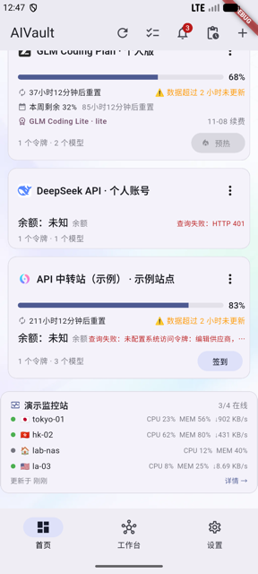
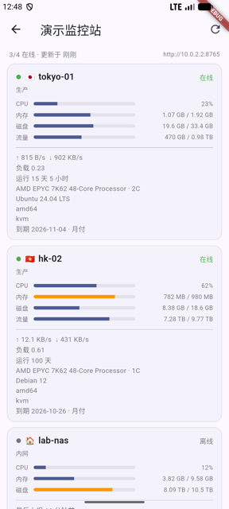
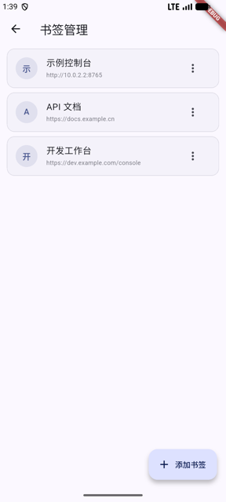
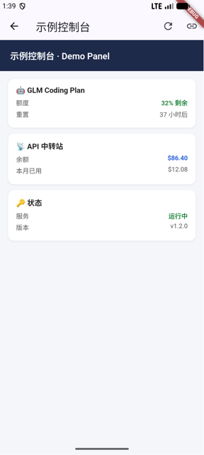
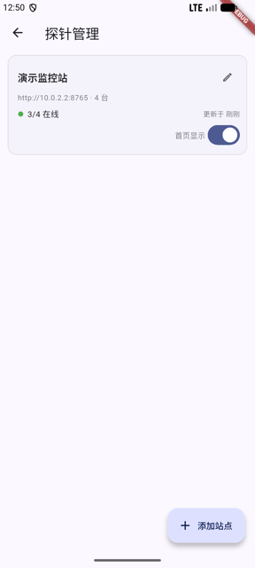
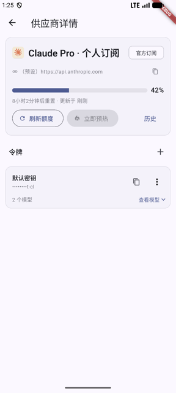
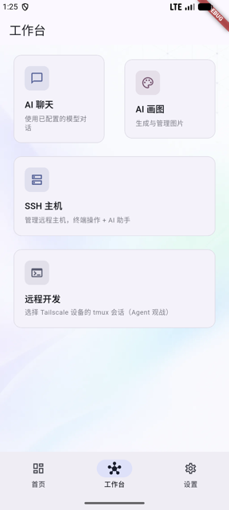
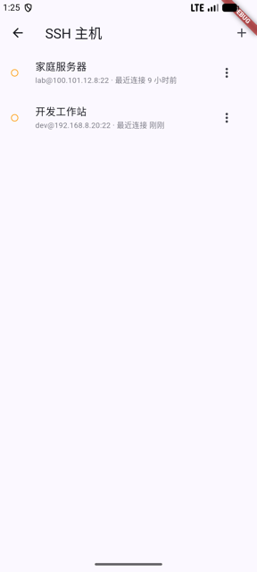
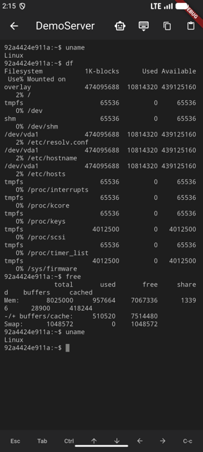
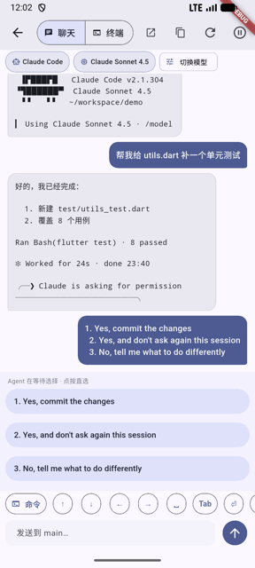
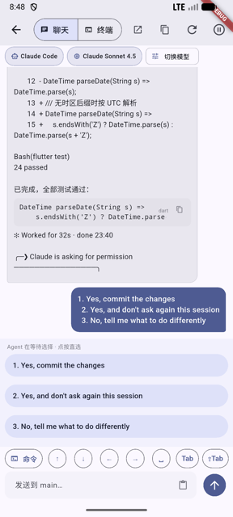
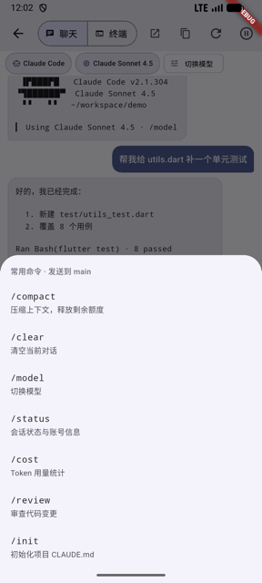
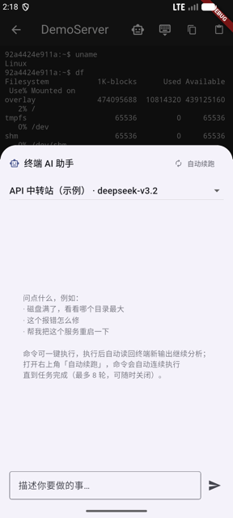
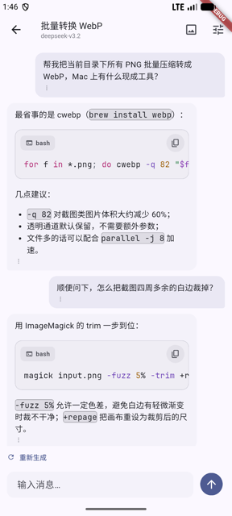
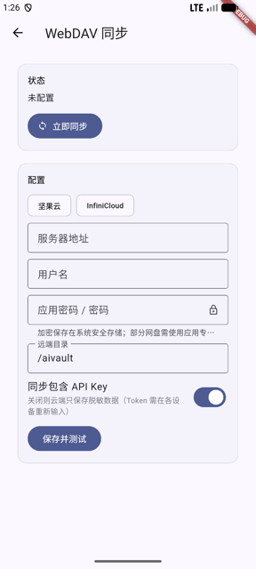
最新版本：GitHub Releases（固定签名，覆盖升级不丢数据）
不清楚架构？无脑选 arm64-v8a。安装时系统若提示未知来源，允许即可。
三分钟接入你的第一个订阅
首页右上角 +：选择 NewAPI / 智谱 / DeepSeek / OpenAI 兼容等类型，填入站点地址与令牌。中转站粘贴「系统访问令牌」，模型 Key 存系统安全存储。
下拉或点刷新按钮拉取额度与余额；需要预热 / 签到时在卡片或批量操作里一键执行，任务进度在任务中心可见。
工作台 → SSH 主机：填主机、用户名与私钥即可连入完整终端；电脑上 tmux 跑着 Claude Code 时，手机端可直接观战并接手。
感谢真诚、友善、团结、专业的 LinuxDo 社区，让我学到那么多有关 AI 相关知识。
LinuxDo — 学 AI, 上 L 站!